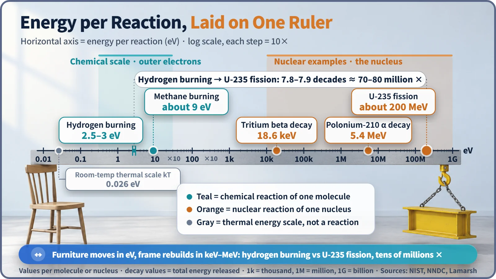
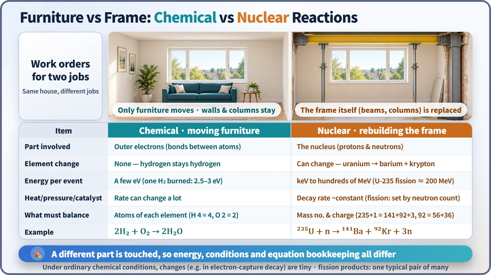

Nuclear Reactions & Fission · 026
Rearrange the Furniture or Rebuild the Frame? — How Nuclear Reactions Differ from Chemical Reactions
One touches the electrons, the other rebuilds the nucleus. That difference sets the energy scale, the response to heat and catalysts, and what an equation must balance.
A chemical reaction rearranges the outer electrons of atoms; a nuclear reaction changes the nucleus itself. That single difference explains why nuclear reactions release tens of millions of times more energy per event, why heat and catalysts barely affect radioactive decay, and why the two kinds of equation balance different things. [1]
Furniture or frame?
Call a contractor to work on your house and the first question is usually this: are we just moving furniture around, or are we touching the structure? Sliding the sofa over to the window and tearing out columns to add a second floor both change the house, but the effort, the result, and what controls the schedule could hardly be more different.
Matter changes in two ways that line up neatly with those two jobs. Rearranging the furniture is a chemical reaction. Rebuilding the frame is a nuclear reaction. A gas-stove flame and the uranium in a reactor both give off heat, but in house terms they are not even the same kind of job. Four questions show where the two part ways.
Question one: what gets touched?
An atom is made of a tiny nucleus at the center (a cluster of protons and neutrons) and electrons moving around it. If an atom is about one ten-billionth of a meter across (10⁻¹⁰ m), the nucleus is another 10,000 to 100,000 times smaller. [1]
A chemical reaction only touches the outer electrons. Atoms give, take or share electrons and so change bonding partners. When hydrogen and oxygen combine into water, every hydrogen atom is still hydrogen and every oxygen atom is still oxygen. The furniture is all still there; only the layout has changed.
In a nuclear reaction, the nucleus itself changes. Radioactive decay, nuclear fission and neutron capture all belong here. If the number of protons changes, the element itself changes, as when uranium splits into barium and krypton. That is tearing out beams and columns and putting up a different building. It is also why the old alchemists never turned lead into gold: their fires and potions were all furniture-moving tools.
Question two: hand tools or heavy machinery?
Compare the energy released by a single reaction and the gap jumps out. The unit is the electronvolt (eV), the tiny amount of energy one electron picks up crossing a 1-volt potential difference. A million eV is an MeV.

| Single event | Type | Energy released |
|---|---|---|
| One hydrogen molecule burning to water | Chemical | about 2.5–3 eV |
| One methane molecule burning | Chemical | about 9 eV |
| One tritium nucleus, beta decay | Nuclear | about 18,600 eV (18.6 keV) |
| One polonium-210 nucleus, alpha decay | Nuclear | about 5.4 MeV |
| One uranium-235 nucleus, fission | Nuclear | about 200 MeV |
One hydrogen burn against one uranium fission is a ratio of about 70 to 80 million, a difference of tens of millions of times. Even tritium decay, one of the gentlest nuclear reactions (its 18.6 keV is shared by the electron and an antineutrino), beats a burning molecule by thousands of times. [2] [3]
Electrons are held by the electric force, and those bonds are a few eV strong. Protons and neutrons are held by the far stronger nuclear force, and that binding is measured in MeV, roughly a million times larger. This ties back to the mass defect: in a chemical reaction the mass that disappears is only about one ten-billionth of the total, far too little for any scale, while in fission about one-thousandth of the mass turns into energy. [1]
One caution: this compares one molecule against one nucleus. Gram for gram of fuel, the ratio is different.
Question three: can the weather hurry the job along?
Chemical reactions are very sensitive to outside conditions. Raise the temperature and molecules collide harder, so the reaction speeds up (near room temperature, a 10 °C rise roughly doubles the rate, as a rule of thumb). Higher pressure or a catalyst, which lowers the reaction's threshold, also speeds things up. A fridge is, in the end, a way to slow chemical reactions down.
Radioactive decay, under ordinary conditions, barely notices any of this. The typical thermal energy one atom or molecule trades at room temperature (kT) is about 0.026 eV, and even at 1,000 °C it is only about 0.1 eV. That matters for chemical bonds measured in eV, but for a nucleus bound in MeV it isn't even a tickle. Point a space heater at the outside wall all day and the structural bolts won't loosen themselves.
There are rare exceptions. Beryllium-7, which decays when its nucleus captures one of its own inner electrons, has been measured with half-lives that shift by around 1% depending on its chemical surroundings. Under everyday or engineering conditions the effect is small enough to ignore. [4] [5] [6]
This matters in nuclear power. A reactor's power isn't controlled by temperature the way you tend a fire; it is controlled by the number of neutrons reaching the nuclei. The decay heat of spent fuel doesn't stop just because you cool it, which is why cooling and shielding go on for a long time. For the same reason, burning or chemically treating radioactive material cannot shorten its half-life.
Question four: what goes in the ledger?
A reaction equation is a construction ledger: it records what must be the same before and after the job.
For a chemical reaction, the ledger counts atoms of each element. In 2H₂ + O₂ → 2H₂O there are 4 hydrogen atoms on each side and 2 oxygen atoms. The furniture count doesn't change.
A nuclear reaction keeps a different ledger. Element counts need not match; instead the total mass number (protons plus neutrons) and the total charge (number of protons) must balance. When uranium-235 absorbs a neutron and splits into barium-141, krypton-92 and 3 neutrons, the mass number gives 235 + 1 = 141 + 92 + 3 = 236 and the charge gives 92 = 56 + 36. The element names change, but the total count of building parts is preserved. Ba-141 plus Kr-92 is only one typical pair among the many possible fission products.

Key takeaways
A chemical reaction rearranges the furniture; a nuclear reaction rebuilds the frame. Because they touch different parts of the atom, their energies differ by tens of millions of times, they respond differently to outside conditions, and they keep different ledgers. That a power plant makes so much energy from so little fuel, that its power is controlled with neutrons, and that its spent fuel must be cooled for a long time all follow from the nature of this structural work.